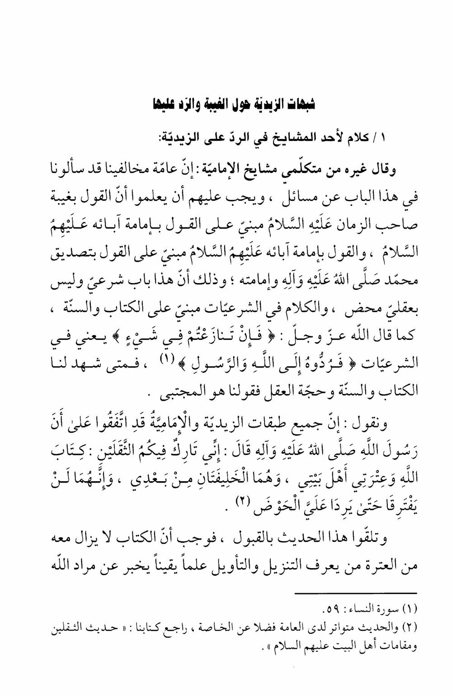
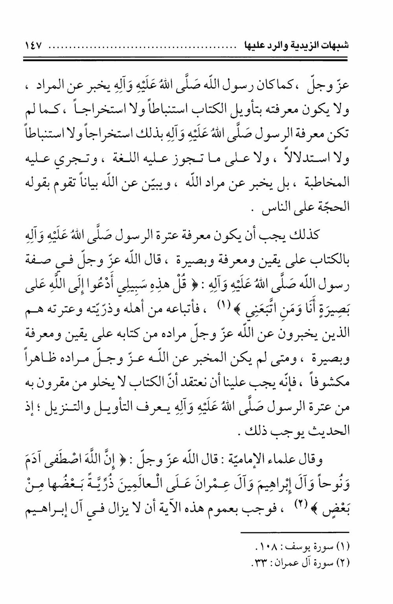

Слова шейха-имамита: почему довод (итра) обязан существовать всегда
Книга-источник: шейх ас-Садук, «Камаль ад-дин ва тамам ан-ни‘ма» (كمال الدين وتمام النعمة), том 1. Раздел «Возражения зейдитов относительно гайбы и ответ на них» (стр. 146) открывается словами одного из шейхов-мутакаллимов имамитов.
Перевод: «Другой мутакаллим из шейхов-имамитов сказал: наши оппоненты в целом спрашивают нас по этому вопросу, но им следует знать, что учение о сокрытии владыки времени (мир ему) построено на учении об имамате его отцов (мир им), а учение об имамате его отцов построено на признании пророчества Мухаммада (да благословит его Аллах и род его) и его руководства общиной. Ведь это — вопрос шариатский, а не чисто рациональный, а рассуждение о шариатских вопросах строится на Коране и Сунне, как сказал Аллах: “Если вы препираетесь о чём-либо” — то есть в шариатских вопросах — “обращайтесь с этим к Аллаху и Посланнику”. И когда за наше слово свидетельствуют Коран, Сунна и довод разума, то именно наше слово и есть избранное (аль-муджтаба). И мы говорим: все течения зейдитов и имамитов согласны, что Посланник Аллаха сказал: “Поистине, я оставляю среди вас две тяжёлые вещи: Книгу Аллаха и мою ‘итру — людей моего дома; они — два преемника после меня, и они никогда не разлучатся, пока не придут ко мне у Хауда”. Это сообщение принято обеими сторонами, а значит, рядом с Книгой всегда обязан находиться кто-то из ‘итры, кто с достоверным знанием разъясняет ниспослание и толкование, сообщая о замысле Аллаха».

Перевод: «...сообщая о замысле Аллаха, — так же как Посланник Аллаха сообщал о [Его] замысле, и его познание толкования Книги не было выводом по аналогии, извлечением из контекста или умозаключением — точно так же познание Посланником этого не было ни выводом, ни извлечением, ни умозаключением, ни тем, что допускает язык и обиходная речь, а он сообщал о замысле Аллаха и разъяснял от Аллаха разъяснением, которым устанавливается довод против людей. Точно так же обязано быть познание ‘итрой Пророка Книги — с достоверностью, знанием и прозрением. Аллах сказал, описывая Своего Посланника: “Скажи: это мой путь, я призываю к Аллаху с ясным видением — я и те, кто последовал за мной”. Так и его последователи из числа его семьи, потомства и ‘итры — это те, кто с достоверным знанием и прозрением сообщает о замысле Аллаха в Его Книге. А если сообщающий о замысле Аллаха не будет явным и раскрытым, то нам следует полагать, что рядом с Книгой всегда есть некто из ‘итры Посланника, знающий толкование и ниспослание, — ибо хадис [ас-сакалайн] обязывает к этому. Учёные-имамиты сказали: Аллах сказал: “Поистине, избрал Аллах Адама, Нуха, род Ибрахима и род Имрана пред мирами — потомство одних от других”. Из всеобщности этого аята следует, что среди рода Ибрахима всегда должен быть избранник».

Вывод довода: Раз хадис ас-сакалайн (о «двух тяжёлых вещах») признан и зейдитами, и имамитами, то необходимость постоянного «довода из ‘итры» — не специфически имамитская выдумка, а прямое следствие их же собственной посылки.